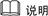
手册以NE40E-X16为例进行介绍，CX600-X16/ME60-X16/NE5000E-X16防尘网的清理方法和NE40E-X16的类似。
步骤 1 确认待更换的防尘网的安装位置。
在拔出待更换的防尘网之前，维护人员应首先确认该防尘网所在的机柜、机箱等安装位置信息，然后在机箱中找到所需更换的防尘网，并在其面板上粘贴更换标签，以免发生误操作。
步骤 2 佩戴好防静电腕带，并将其接地端插入机架上的ESD插孔。
步骤 3 拆卸进风框防尘网。
1. 进风框面板在设备的上方和下方各有一个。双手同时按压进风框面板两侧的抠手位，平行向外拉，将进风框面板取下，如下图所示。
图1-1 NE40E-X16进风框面板拆卸示意图
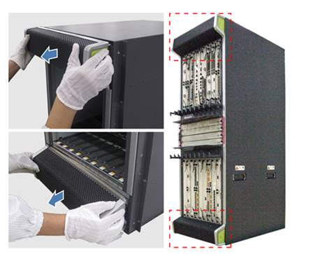
2. 将进风框面板放于平整桌面上，双手同时向进风框面板内侧挤压网状固定架的扣手位，取出网状固定架，拆除内部海绵防尘网，如下图所示。
图1-2 NE40E-X16进风框面板内海绵防尘网拆除示意图
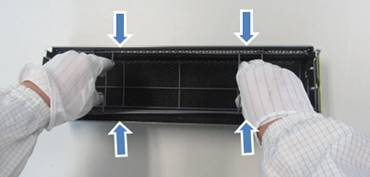
步骤 4 拆卸网板区防尘网。
1. 防尘网面板位于设备中间左侧，拆卸时一手握住防尘网面板上把手，一手托住防尘网面板的底部，平行向外拉，如下图所示。
图1-3 NE40E-X16网板区防尘网面板拆卸示意图
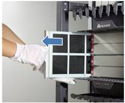
2. 取下用于固定海绵防尘网的两条弹簧丝，然后将海绵防尘网缓慢剥离防尘网面板，如下图所示。
图1-4 NE40E-X16网板区海绵防尘网拆卸示意图
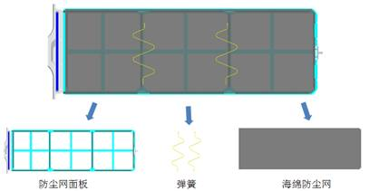
步骤 5 清理防尘网。
路由器采用的是海绵防尘网，清理步骤如下：
1. 将防尘网上较多的灰尘拍打掉。
2. 用清水清洗防尘网或用软毛刷、吸尘器将防尘网上面的灰尘清理、吸净。
l 请使用清水将防尘网清洗干净，清洗时按压防尘网即可，但不可搓揉，避免防尘网破损。如不慎破损，请申请更换新防尘网，防尘网编码：21242214。
l 清洗完毕后务必将防尘网晾干，可以使用空调的出风口等处进行吹干。
l 必须将海绵防尘网从防尘网面板拆除后再清理，不允许不拆海绵防尘网直接带面板整体清理。
步骤 6 安装进风框的防尘网。
1. 将干净且干燥的海绵防尘网平整铺放于进风框面板内，再将网状固定架安装于进风框面板内，如下图所示。
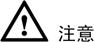
l 安装海绵防尘网时，需将网状固定架紧固卡在进风框面板的四个卡口处，如下图所示。
图1-5 NE40E-X16进风框面板内海绵防尘网安装示意图
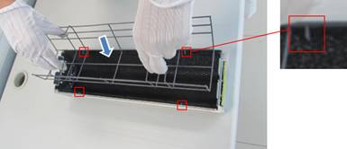
2. 双手握住进风框面板两侧的扣手位,将进风框面板装回对应的位置，如下图所示。
图1-6 NE40E-X16进风框面板安装示意图
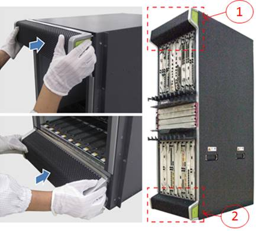
l 安装上下进风框面板时，需注意安装方向，请按照图2-18中①、②所示方向安装，避免反装。
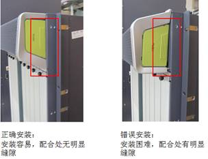
步骤 7 安装网板区防尘网。
1. 将干净且干燥的海绵防尘网平铺在防尘网面板，确保海绵防尘网牢固粘贴于束网条上，然后将两条弹簧丝安装于防尘网面板对应位置，如下图所示。
图1-7 NE40E-X16网板区海绵防尘网安装示意图
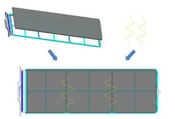
l 在安装清理后的海绵防尘网时，如海绵防尘网出现明显变形，导致海绵防尘网超出防尘网面板限位边缘，需更换新的海绵防尘网。
l 弹簧丝需安装平整、紧固，不出现弹簧丝扭曲、变形等现象。
l 如遇拆卸或安装弹簧丝困难情况，可使用尖口钳进行操作。
2. 一手托住防尘网面板的底部，一手握住防尘网面板上的把手，将防尘网面板平行插入机箱中，如下图所示。
图1-8 NE40E-X16网板区防尘网面板安装示意图
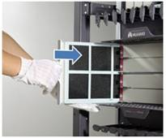